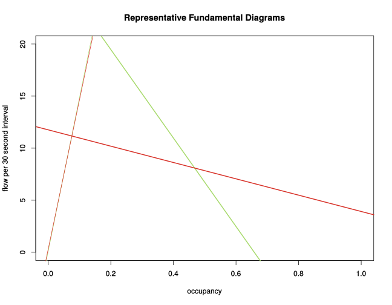

Analysis currently consists of the following steps:
- Download 10 months worth of 30 second PEMS sensor data for the Bay Area, about 130 GB.
- Separate them into groups based on station.
- Fit a (naive) fundamental diagram to the second lane of the freeway by using two robust linear models for each station: One for data with occupancy less than 0.15 and one for greater.
- Note: Using millions of data points per station allows constructing tight confidence intervals for the parameters.
- Then these 4 parameters: slope and intercept for congested and
uncongested, were used as the inputs to a kmeans clustering. I didn't
discover any reasonable clusters.
The green line below is from station 400501 on I80W. The red line is
from station 404401 on I80E before Carquinez toll. Both are in the
same area west of Carquinez Bridge.

Theoretically, each line should pass through the point (1, 0).
The lines plotted above represent 2 cases on opposite extremes. Most
other lines will lie between these and hence closer to (1, 0).
Thinking further, it might be the case that for many stations there are
relatively few observations in the area of high density. This can bias
results since the fundamental diagram isn't truly linear.
The circles plotted below correspond to different values for the congested slope in
the triangular fundamental diagram.
Green means the line is steeply negative, so
congestion should clear quickly. Red means the line is more flat, meaning
congestion takes more time to clear.
Click on the circles to see the actual values.